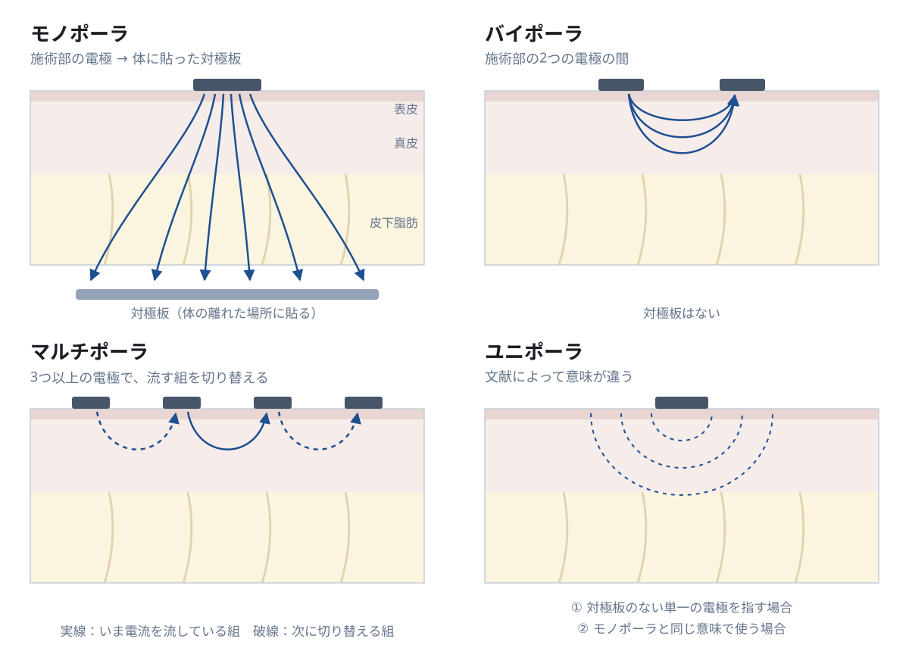
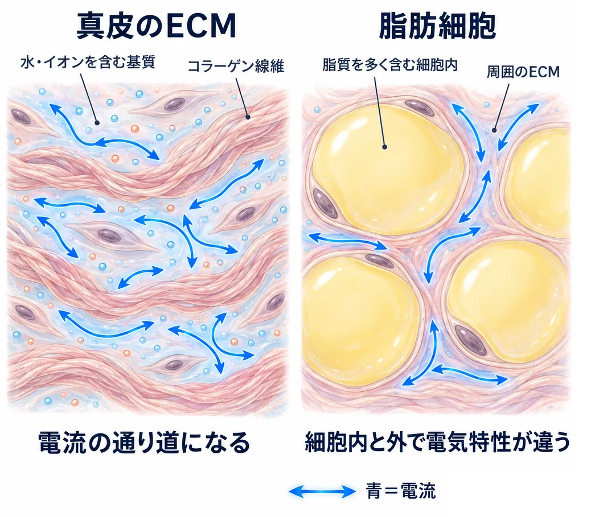
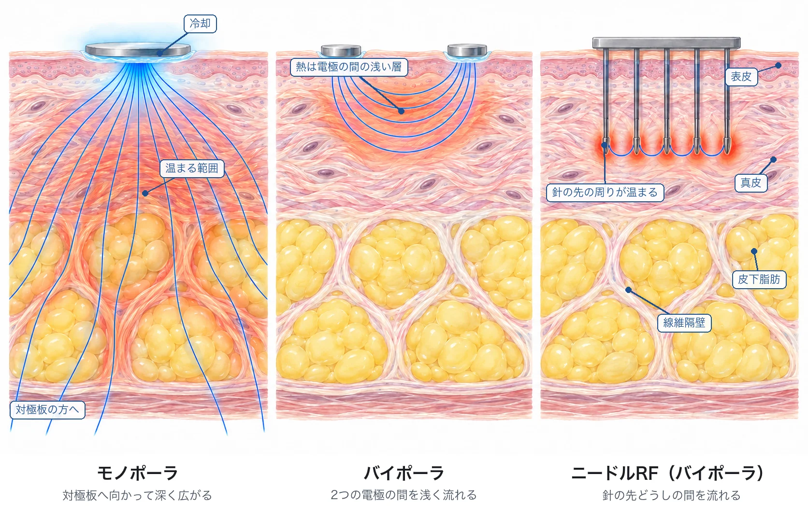
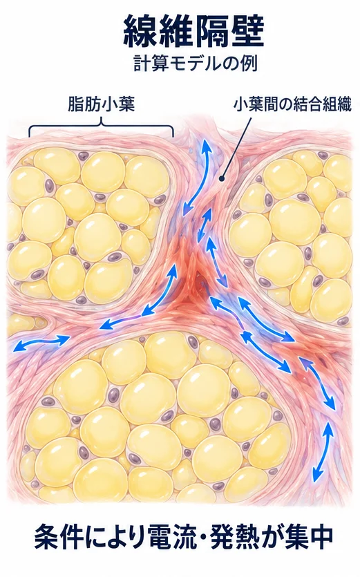
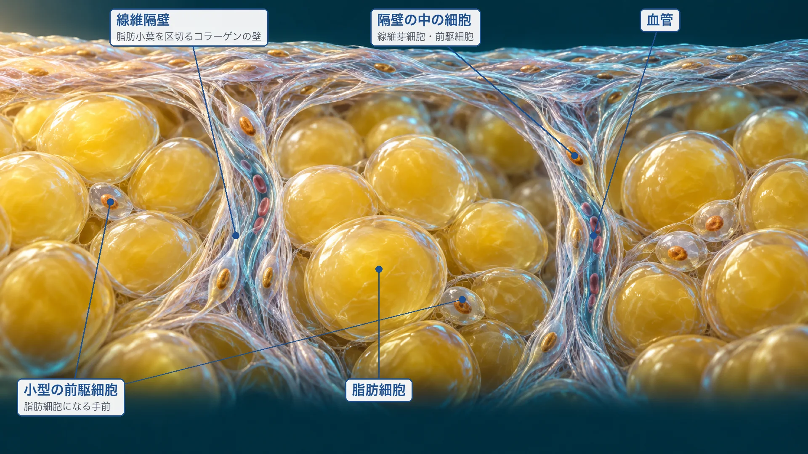
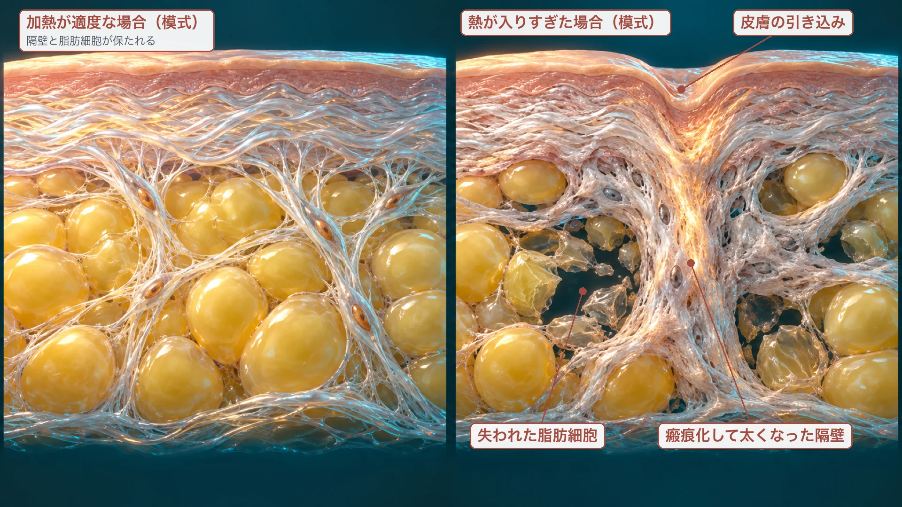
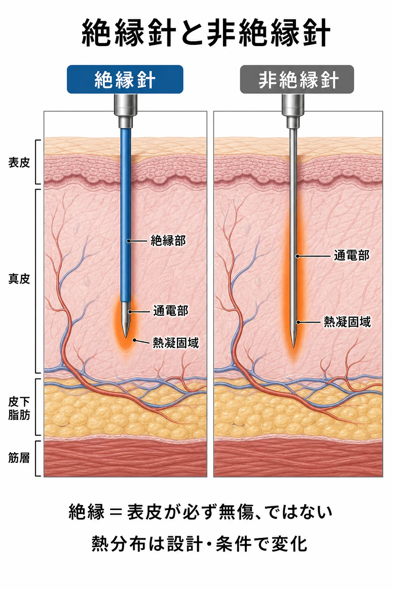
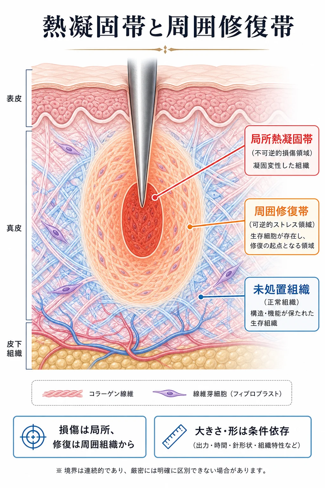
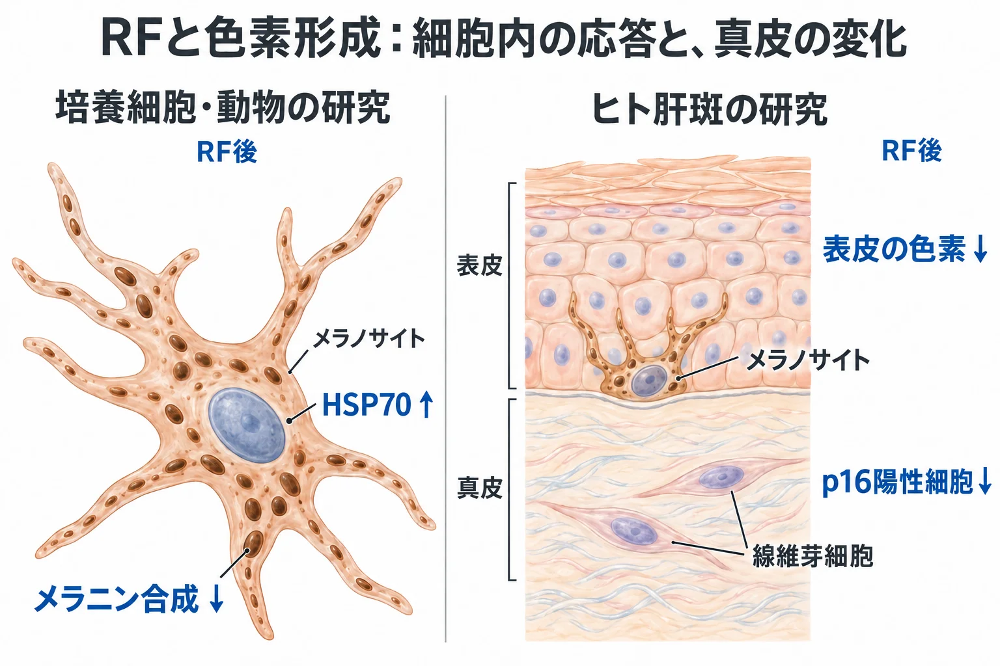

美容皮膚科 ／ デバイス
RFの生化学高周波の物理、モノポーラRFとニードルRF
公開 2026-10-29
RF（radiofrequency、高周波）治療は、組織に高周波の電流を流し、組織の電気抵抗で生じる熱を使う治療です。皮膚に電極を当てるモノポーラRFは、表面を冷やしながら真皮の深い層から皮下の線維隔壁までを温め、たるみの治療に使われます。皮膚に刺した針を電極にするニードルRFは、針の周りを局所的に加熱し、肌質や痤瘡瘢痕のほか、皮脂・赤み・肝斑にも使われます。
この章では、高周波の電流が組織のどこで熱になるかを見たうえで、モノポーラRFとニードルRFの熱の入り方を比べ、RFの熱のあとに細胞で起こる応答を追います。細胞の応答の仕組みは両方に共通し、根拠となる研究にはニードルRFで調べたものが多いため、どの方式の研究かを添えて示します。熱が組織と細胞に起こす変化のうち、機器によらず共通する部分はデバイスによる熱治療で扱います。
この章の一言
RFの熱は、電流の集まり方と組織の電気的な性質で決まる場所に生じます。電極を皮膚に当てるモノポーラRFと針を刺すニードルRFでは熱の入る層が違い、その層にいる細胞の応答が、その後の組織の変化を決めます。
1 RFの基本：電極の置き方で、電流の通り道が決まる
RF（radiofrequency、高周波）は、ここでは数百kHz〜数十MHzの周波数で向きが切り替わる交流電流を指します。RF機器は、皮膚に置いた電極から組織に電流を流し、組織の中で生じる熱を治療に使います。
モノポーラ・バイポーラ・ユニポーラ・マルチポーラ
電流は、電極から電極へ流れます。そのため、電極をどこに置くかで、電流が組織のどこを通るかが決まります。
| 方式 | 電極の置き方 | 電流の通り道 |
|---|---|---|
| モノポーラ | 施術部に当てる小さな電極と、体の離れた場所に貼る大きな対極板 | 体の中を通って対極板へ向かうため、皮膚の下の深い層まで届く。電流は小さな電極の直下に集まり、深くなるにつれて広がって密度が下がる |
| バイポーラ | 施術部に2つの電極を並べる。対極板は使わない | 2つの電極の間とその周りに限られ、浅く局所的に流れる |
| マルチポーラ | 施術部に3つ以上の電極を並べ、電流を流す電極の組を切り替える | バイポーラと同じく、電極の間を流れる |
| ユニポーラ | 文献によって意味が異なる | モノポーラと同じ意味で使われる場合と、対極板のない単一の電極を指す場合がある（Simmonsら, Clin Cosmet Investig Dermatol, 2014） |
ニードルRFでも、刺した針と対極板の間に流すモノポーラ方式と、針同士の間に流すバイポーラ方式があります。

イオンが動き、組織の抵抗で熱が生じる
組織の中では、水に溶けたナトリウムイオンや塩化物イオンが、電場の向きの切り替わりに合わせて行き来し、電流を担います。動いたイオンは周りの水分子などとぶつかり、電気エネルギーが分子の運動、つまり熱に変わります。これがジュール熱です。

熱が強く生じるのは、電流がある程度流れ、しかも抵抗もある場所です。電流がほとんど流れない場所でも、抵抗がほとんどない場所でも、熱はあまり生じません。同じ電流が通るなら、電流を通しにくい（導電率が低い）組織ほど強く熱くなります。同じ電圧がかかるなら、電流を通しやすい組織ほど多くの電流が流れ、強く熱くなります。 導電率が低いほど熱くなるとは一概にいえず、どちらになるかは、組織の並び方と電流の向きで決まります（次の小節）。生じた熱は周りの組織へ伝わり、血流によって運び去られるため、実際の温度はこの発熱と熱の移動の釣り合いで決まります。
組織によって、熱の生じやすさが違う
交流に対する電流の流れにくさをインピーダンスと呼びます。インピーダンスは、組織の水分やイオン、脂質、細胞膜、ECMの構成と配置によって異なります。組織の電流の通しやすさは、水分と、そこに溶けたイオンの量でほぼ決まります。真皮で電流を運ぶのは、コラーゲン線維の間を埋める基質です。基質は、ヒアルロン酸やプロテオグリカンが水を抱え込んだゲルで、その水（組織間液）にナトリウムイオンや塩化物イオンが溶けています（→ 細胞外基質（ECM））。このイオンが動くことで電流が流れ、コラーゲン線維そのものは電流をほとんど運びません。脂質が主体の脂肪細胞の中は水とイオンが少なく、脂肪は電流を通しにくい組織です。脂肪組織の中でも、電流は脂肪細胞の内部より、細胞の周りの薄いECMを流れます。肥大した脂肪細胞の周りでECMが発達した条件の計算モデルでは、細胞内の脂質と周りのECMの間に大きな温度差が生じうることが示されています（Kruglikov, PLoS One, 2015）。

| 組織 | 導電率（S/m、1 MHz） | 脂肪を1としたとき |
|---|---|---|
| 筋 | 0.50 | 約20 |
| 皮膚（真皮に相当） | 0.22 | 約9 |
| 脂肪 | 0.025 | 1 |
| 線維隔壁 | 実測値なし（計算モデルでは仮定した値を使う） | — |
（ヒトと動物の組織の測定をもとにしたGabrielらのモデルによる値。美容RFの計算モデルで使われている値を示す：Gabrielら, Phys Med Biol, 1996、González-Suárezら, Lasers Surg Med, 2015）
表の値では、皮膚は脂肪の約9倍、電流を通しやすい組織です。動物の組織を1 MHzで測った値でも、真皮0.34、腱0.35、皮下脂肪0.022 S/mと、同じ順に並びます（NICT 誘電率データベース）。値は水分量や温度で変わり、ヒトの前腕で皮下組織全体として推定した脂肪の導電率は約0.22 S/mと、高く出た報告もあります（Kangasmaaら, Bioelectromagnetics, 2025）。なお、機器が表示するインピーダンス（Ω）は、電極の形や距離にも左右される回路全体の値で、この表の組織の性質とは別の量です。
どの組織が強く熱くなるかは、組織の導電率と、電流がどう流れるかの組み合わせで決まります。電流は通しやすい組織を選んで流れるため、美容RFの多くの条件では、電流の大部分は真皮を流れ、皮下では脂肪小葉の間の線維隔壁を通ります。 電流を通しにくい脂肪小葉そのものには電流があまり入らず、温まりにくい組織です（§2）。
脂肪が強く熱くなるのは、電流が皮膚から脂肪へ層を垂直に貫き、どの層にも同じ電流が通る場合です。このときは計算上、電流を通しにくい脂肪の発熱が大きくなります（Jiménez-Lozanoら, 2012）。皮下脂肪の加熱を狙う機器は、電極の形や通電条件をこの方向に設計しており、ヒトで深さ7〜12 mmの脂肪が50℃前後に達した報告があります（Francoら, 2010）。
温まった場所ほど、電流が流れ込みやすくなる
組織の導電率は、温度が上がると高くなります。温度が上がるとイオンが動きやすくなるためで、動物の組織を体外で測った研究では、1℃あたり約1.5〜2%でした（460 kHz、ブタの脂肪1.7%、腎1.6%：Popら, Phys Med Biol, 2003）。加熱をやめると元に戻る変化です。
電流が温まった部分に沿って流れる配置では、導電率が上がった場所に電流がさらに流れ込み、発熱が増えて、いっそう温度が上がります。 肝臓のRF焼灼の計算では、導電率の温度による変化を入れると、電極の周りの電流密度が約2倍になりました（Chang, Biomed Eng Online, 2003）。針の周りや、電流の向きにそろった線維隔壁が、この配置にあたります。反対に、電流が層を垂直に貫く配置では、導電率が上がった層の発熱はかえって減ります。皮膚そのものの温度による導電率の変化や、美容RFで局所の温度がこの仕組みで上がり続けることを直接測った研究は見当たりません。
さらに温度が上がると、組織の変化は元に戻らなくなります。60℃を超えてタンパク質が凝固すると、組織は加熱前より電気を通しやすくなります（ヒトの肝臓の切除標本：Haemmerichら, Physiol Meas, 2009）。100℃付近で組織の水分が蒸発し、電極の周りが乾燥や気泡で覆われると、今度は電流が通りにくくなり、インピーダンスが急に上がります（ウシの肝臓と計算：Trujilloら, Int J Hyperthermia, 2012）。
機種によっては、組織のインピーダンスや温度をリアルタイムに測り、出力を自動で調整する仕組みを持っています（Hantashら, Lasers Surg Med, 2009；Harthら, J Cosmet Dermatol, 2011）。ヒトの皮膚でも、1回のパルスの間にインピーダンスが下がることが測られています（22例、1 MHz：Harthら, 2011）。
方式ごとの熱の入り方
電極の置き方と組織の性質を合わせると、方式ごとに熱が入る場所が分かります。モノポーラでは、電流が対極板へ向かって深くまで広がり、通しやすい真皮と線維隔壁を流れるため、表面の冷却と合わせて、真皮の深い層から皮下の隔壁まで温まります。バイポーラでは、電流が2つの電極の間の浅い真皮だけを流れ、そこが温まります。ニードルRFでは、針の先どうしの間で電流が最も集まり、針の先の周りに小さな熱の範囲ができます。

周波数によって、組織の電気的な性質が変わる
美容に使われるRF機器の周波数には、0.45〜0.55 MHz前後、1〜4 MHz、6.78 MHz、40.68 MHzなどがあります。6.78 MHzと40.68 MHzは、医療・産業用に国際的に割り当てられた周波数帯（ISM帯）に含まれます。
この周波数帯の電磁波の波長は皮膚の厚さよりはるかに長く、組織の中の電流の分布は、主に電極の形と配置、組織の層構造、各組織の電気的な性質で決まります（Jiménez-Lozanoら, Phys Med Biol, 2012）。周波数が上がると、細胞膜の性質によって電流の通り道が変わります。細胞膜は電気を通しにくい薄い膜で、低い周波数の電流は主に細胞の外の液を流れます。周波数が高くなると、電流は膜を越えて細胞の中も流れるようになります。そのため、組織の導電率と誘電率は周波数によって変わり、その値はヒトと動物の組織で測定されています（Gabrielら, Phys Med Biol, 1996）。
周波数による熱の分布の違いは、計算モデルと動物の組織で調べられています。同じ電極で周波数を比べると、500 kHzのほうが4 MHzより広く深い範囲が加熱され（Francoら, Lasers Surg Med, 2009）、2 MHzのほうが6.78 MHzより広く深く加熱されました（Koら, Lasers Med Sci, 2025）。どちらも機器メーカーに関係する著者による研究で、ヒトで周波数を比べて組織の温度を測った研究はまだありません。実際に熱が届く深さには、周波数に加えて、電極の大きさ・形や冷却の条件も関わります。
2 6.78 MHz容量性モノポーラRF：表面を冷やしながら、深い層を温める
この節では、6.78 MHzの容量性電極と表面の冷却を組み合わせたモノポーラRFを扱います。同じモノポーラ方式でも、周波数、電極の構造、冷却の方法が違う機器では、熱の入る深さや温度の分布が変わるため、ここでの説明をそのまま当てはめることはできません。
表面を冷やすと、温度のピークが深い層へ移る（逆熱勾配）
モノポーラ方式では、電流密度は電極の直下、つまり皮膚の表面近くで最も高くなります。そのまま通電すると、表皮と真皮の浅い層が最も熱くなります。そこで、通電の前後と通電中に電極の面から皮膚を冷やし、表面で生じた熱を奪います。すると、温度が最も高い場所が、真皮の深い層へ移ります。表面の温度が低く、深い層の温度が高いこの分布を逆熱勾配（reverse thermal gradient）と呼びます。この呼び方は、主に機器メーカーの資料で使われるものです。
6.78 MHzのモノポーラRFは、薄い膜を挟んで皮膚に電流を伝える容量性の電極を使い、この冷却と組み合わせています（FDA 510(k) K090580）。
6.78 MHzの機器で、ヒトの真皮の温度を直接測った報告は見当たりません。ブタでは、皮膚表面を42〜45℃以下に保ちながら、真皮の最高温度を50〜70℃にできたと報告されています（Parkら, J Cosmet Dermatol, 2024）。別方式の非侵襲RFでは、腹部形成術を予定したヒトで、深さ7〜12 mmの脂肪が50℃に達したとき、皮膚の表面は30℃未満でした（Francoら, Lasers Surg Med, 2010）。
電流は、真皮を通って皮下の線維隔壁まで届く
モノポーラ方式では、電流が電極から対極板へ向かって体の中を流れるため、真皮を通り、その下の皮下組織にも届きます。熱は真皮の深い層から皮下まで、広い範囲に生じます。
皮下脂肪の中には、脂肪小葉を区切る線維隔壁（fibrous septa）が網目状に走り、皮膚を深部の筋膜や支持靭帯につないでいます（→ たるみの多層構造）。隔壁も、真皮と同じくコラーゲン線維の間を水とイオンを含む基質が埋める結合組織で、電流を通しにくい脂肪小葉の間を走る、電流の通り道になります。
皮膚の表面に置いた大きな電極から通電する計算モデルでは、皮膚に垂直に走る隔壁、つまり電流の向きにそろった隔壁に電流が集まり、周りの脂肪より強く発熱しました。隔壁があると、脂肪層全体の温度上昇も大きくなりました（Jimenez Lozanoら, Lasers Surg Med, 2013）。隔壁の電気的な性質には実測値がないため、計算では仮定した値が使われており、特定の機器の温度分布を再現したものではありません。同じグループの別の計算では、電流は隔壁に集まって流れる一方、電場は電流を通しにくい脂肪のほうで強くなりました。縦に走る隔壁では、電流が集まる効果が大きく、発熱が高くなりました（González-Suárezら, 2015）。隔壁は周りの脂肪と比べて強く熱くなる場所で、真皮も同じように電流を通して発熱しています。6.78 MHzと2 MHzを比べたモデルとミニブタの実験でも、6.78 MHzでは隔壁に沿って加熱が起こり、30日後に真皮と隔壁が厚くなっていました。脂肪細胞のアポトーシスは見られていません（3頭、メーカーに関係する著者：Koら, 2025）。ヒトで隔壁の収縮や作り直しを組織で確かめた報告はまだありません。

隔壁には、コラーゲンを作る線維芽細胞のほかに、脂肪細胞などになることができる前駆細胞がいます。マウスの皮下脂肪では、この前駆細胞が隔壁などの線維の網目に沿って並び、ヒトの脂肪にも同じ種類の細胞があることが確かめられています（Merrickら, Science, 2019）。隔壁の加熱がこれらの細胞の働きをどう変えるかは、生体ではまだ調べられていません。

熱が強く入りすぎた場合には、隔壁の線維化と脂肪細胞の減少が重なり、隔壁が皮膚を内側へ引き込むことが考えられます。この過程をヒトの隔壁で組織学的に追った研究はありません。

照射直後の変化と、数か月後の変化
容量性モノポーラRFを照射した直後のヒトの皮膚では、光学顕微鏡では明らかな変化がなく、電子顕微鏡でコラーゲン原線維の形の変化が散在して見られました。変化は深さ3〜4 mmで最も多く見られました（2例：Zelicksonら, Arch Dermatol, 2004）。弱い照射を重ねるほど原線維の変化は増え、5回重ねると強い照射1回とほぼ同じ程度になりました（3例：Kistら, Lasers Surg Med, 2006）。
数か月後には、真皮のコラーゲンが増えたという組織の研究があります。6回照射の3か月後に、I型・III型コラーゲンと新しく作られたコラーゲンが増えました（6例：el-Domyatiら, J Am Acad Dermatol, 2011）。1回照射の2〜6か月後には、真皮の線維の密度が約5%上がりました（11例：Suhら, J Cosmet Dermatol, 2020）。いずれも対照群のない少数例の研究です。
照射直後の引き締まりにコラーゲンの収縮が関わるという説明は、熱によるコラーゲンの変性からの推定で、照射直後の皮膚の縮みをヒトで測った研究は見当たりません。直後の変化と、細胞が数か月かけて起こす変化の違いはデバイスによる熱治療で扱います。
3 ニードルRF：針の周りの組織を局所的に温める
ニードルRFは、皮膚に刺した針を電極にして、針の周りの組織に電流を流します。加熱する深さと範囲は、電極の位置と通電条件によって変わります（Naら, Sci Rep, 2015）。針の刺入による機械的な傷害も、RFによる刺激に加わります。
絶縁の有無で、通電する範囲が変わる
絶縁の範囲や露出部の長さ、通電の方式は機器・チップによって異なります。ここでは、軸を絶縁して先端付近を露出させた針と、軸を絶縁していない針を比較します。
- 絶縁針：絶縁した軸からの直接通電を抑え、露出部を置いた層へ加熱を絞りやすい設計です。作用させる位置を選びやすい一方、複数の層を狙う場合には、露出部の長さや熱の広がりを踏まえて深さを変えることがあります。
- 非絶縁針：軸に沿って通電でき、深さ方向に広い範囲へ作用させる設計に使われます。ただし全長が均一に加熱されるとは限らず、先端付近から凝固が始まる条件もあります。表層を含め、意図しない範囲への加熱にも配慮が必要です（Naら, 2015）。

針の本数と配置も、標的によって変わります。 多くの機器では、多数の針を並べたチップを皮膚に当て、広い範囲に点状の加熱を並べます（フラクショナルな加熱）。一方、皮脂腺を個別に狙う治療では、軸の近位側を絶縁した専用の単針RFが研究されています（Ahnら, Lasers Surg Med, 2020）。瘢痕の再構築でも、作用させたい瘢痕組織がどの深さにあるかを考えます。
治療する層は標的によって選びます。熱の分布は、針の深さに加え、出力・通電時間・パルスの組み方、組織の電気的な性質によって変わります。
表皮に近い加熱では角化細胞やメラノサイト、真皮では線維芽細胞・免疫細胞・血管、毛包周囲では皮脂腺が作用を受ける位置にあります。何mmに針を入れたかに加え、どの組織まで加熱されたかが、その後の応答を考える出発点です。
4 RFのあとに、組織で観察されていること
熱で組織がどこまで傷み、どう修復されるかの仕組みは、機器に共通です（→ デバイスによる熱治療）。修復の経過は炎症と創傷治癒、コラーゲンの合成は線維芽細胞とコラーゲンで扱います。ここでは、RFのあとに実際に観察されたことをまとめます。
凝固する部分と、生き残って熱に応答する部分が混在する
どの程度の反応をどこに生じさせるかは、目的、標的組織、通電条件によって変わります。同じ処置部位でも、凝固する部分と、細胞が生存して熱に応答する部分が混在する場合があります。ニードルRFのブタ皮膚の実験でも、電極周囲の凝固域と、電極間の壊死を伴わない熱反応が区別されています（Choら, 2024）。
詳しく：凝固域ができる条件の例と、パルス照射の意味
次の図は、電極付近で凝固が起こる条件の一例です。凝固壊死を、HSPの産生やすべての治療効果の必須条件とする図ではありません。

短いパルスに分けた照射でも、熱は生じます。パルス型RFを用いたマウス皮膚の実験では、基底膜や血管の変化とともに、少数の凝固域も観察されています。「パルス照射」「壊死を伴わない」「非熱作用」は同じ意味ではありません（Choら, Skin Res Technol, 2018）。
生き残った細胞ではHSPが増え、その後にコラーゲンが作り直される
ニードルRF後のブタ皮膚では、熱ショックタンパク質（HSP）やECM関連の遺伝子発現が増え、その後に新しいコラーゲン組織が形成されています（Limら, J Drugs Dermatol, 2013）。ヒトの皮膚標本でも、ニードルRF後にTGF-βとI型コラーゲンの発現増加が報告されています（Minら, Arch Dermatol Res, 2015）。HSPが熱を受けた細胞を守る仕組みはデバイスによる熱治療、TGF-βが線維芽細胞のコラーゲン合成を促す経路はシグナル伝達経路の「TGF-β–Smad」で扱います。
詳しく：コラーゲンの測定値は、何を示しているのか
コラーゲン遺伝子の発現、procollagen、成熟したコラーゲン線維の量は、それぞれ異なる段階の指標です。HSP47の増加は合成に関わる細胞内の変化を捉えますが、成熟した線維の量や配列を直接示す値ではありません。
I型とIII型は、どちらも正常真皮の構成成分です。III型がそのままI型へ変わるわけではなく、両者の合成と分解によって構成が変わります。I：III比だけで、望ましい修復と病的な線維化を判定することはできません。線維の組織像、皮膚の硬さや柔軟性、外観と経過を併せて評価します。
詳しく：動物で報告された、RF後のNRF2とマクロファージの変化
加齢マウスの皮膚に、モノポーラとバイポーラのRFを組み合わせて照射すると、4週後に表皮でリン酸化したNRF2が増え、AGE（終末糖化産物）のもとになる物質を分解する酵素GLO-1の発現が増えました。AGEとその受容体RAGE、核に移ったNF-κBは減りました（各群3匹、機器メーカーの資金による研究：Ohら, Int J Mol Sci, 2022）。NRF2は、酸化ストレスに応じて抗酸化・解毒に働く遺伝子の転写を促す転写因子です（→ シグナル伝達経路の「Nrf2–Keap1」）。
同じ研究と、同じグループの別の研究では、炎症を抑える方向に働くM2型マクロファージのマーカーCD206と、IL-10も増えました（Ohら, 2022；Byunら, Int J Mol Sci, 2024）。一方、別の機器と条件（マルチポーラ、皮膚温40〜42℃、1週間に隔日照射）では、照射直後にM2型マクロファージが減ったという報告もあります（Liら, Int J Mol Sci, 2025）。
どれもマウスの少数例の研究で、組織の温度は測られていません。ヒトの皮膚でRF後のNRF2やマクロファージの極性を調べた研究は見当たりません。
5 熱ストレスへの応答は、メラニン合成にも影響する
ECMを作る線維芽細胞と、メラニンを作るメラノサイトでは、熱ストレスを受けた後に変わる働きが異なります。
実験モデルでは、HSP70が色素合成の抑制に働く
メラノサイトは、角化細胞などが放出するα-MSH（αメラノサイト刺激ホルモン）を、細胞膜の受容体MC1Rで受け取ります。信号はcAMP–PKA–CREBを経て転写因子MITFに届き、メラニン合成に使うtyrosinase（チロシナーゼ）などの酵素が増えます（経路はシグナル伝達経路の「cAMP–PKA」、色素形成の全体はメラノサイトと色素形成）。
RFを加えた培養メラノサイトとUVB照射マウスでは、HSP70の増加に伴い、MC1R・MITF関連の発現やtyrosinase活性が低下し、メラニン量が減りました。培養細胞でHSP70の発現を抑えると、この作用も弱まりました。実験モデルでは、熱ストレスへのHSP70の応答が、メラニン合成を促す信号を弱める方向にも働いたと考えられます（Kimら, Molecules, 2021）。
詳しく：HSP70は、色素合成経路のどこに作用したのか
この研究では、α-MSHで刺激した培養メラノサイトにRFを加え、MC1R、転写因子CREB、MITFなどを調べています。HSP70の発現を抑える実験により、RFによるメラニン合成の低下にHSP70が必要であることが支持されました。
一方、HSP70がどの分子へ直接結合してこの変化を起こしたかは特定されていません。HSP70とMC1Rを、直接の阻害反応として結ぶことはできません。ヒト肝斑での寄与も別に検証する必要があります。
角化細胞・線維芽細胞とのクロストークも、色素形成を変える
メラノサイトは、周囲の角化細胞や真皮の線維芽細胞から届く信号に応じて、メラニン合成を調節しています。このような細胞間のやり取りがクロストークです。角化細胞はα-MSHなどを送り、メラノサイトからメラニンを受け取ります。線維芽細胞も、色素合成を促す因子や抑える因子を分泌します（→ しみとくすみ）。
例えば、真皮からのSCF（stem cell factor、幹細胞因子）は、メラノサイトの受容体c-KITに作用し、色素合成を促します。肝斑では、真皮のSCFと表皮のc-KITの発現増加が報告されています（Kangら, Br J Dermatol, 2006）。一方、線維芽細胞が分泌するSDF-1（stromal cell-derived factor-1）は、色素合成を抑える信号として働きます。日光黒子を調べた研究では、老化した線維芽細胞でSDF-1が減り、メラノサイトのMITFやtyrosinaseが増えました。ニードルRF後には、SDF-1の回復と色素の減少も観察されています（Yoonら, Theranostics, 2018）。
角化細胞側にも、RF後の変化が報告されています。UVBを照射したヒト皮膚の組織培養では、浅い針深度のニードルRF後に角化細胞のDNA損傷応答に関わる指標が減り、メラニン合成に関わる分子の発現が低下しました（Leeら, Int J Mol Sci, 2021）。
基底膜も、RFによるリモデリングの対象になる
基底膜は、表皮の基底細胞を支え、表皮と真皮をつなぐ薄いECMです。肝斑では基底膜の傷害と、メラニンが真皮へ移行して残る変化も見られます。メラニン合成を抑えることに加え、表皮を支える境界部の再構築も、色素病変への作用を考える要点です（→ 肝斑）。
ニードルRF後には、基底膜を構成するECMの変化が報告されています。UVBを照射したヒト皮膚の組織培養では、基底膜部のIV型コラーゲンが増えました（Leeら, 2021）。肝斑やRiehl黒皮症を対象としたヒト研究でも、治療後に基底膜の肥厚と、メラニンやメラノファージの減少が観察されています（Parkら, Dermatol Surg, 2022）。
RFの熱による色素への作用は、メラノサイト内の合成調節、周囲の細胞からの信号、基底膜を含むECMの再構築を合わせて考えます。
詳しく：ヒトで観察された変化との対応
ヒト肝斑の小規模なRF研究では、処置後に真皮のp16陽性細胞が減り、コラーゲン前駆体であるprocollagen-1が増え、表皮の色素が減少しました。p16は細胞老化を調べる指標の一つです。真皮の変化と表皮の色素減少が同時に観察された結果ですが、どの変化が色素減少をもたらしたかまでは特定されていません（Kimら, Exp Dermatol, 2019）。
Leeらの組織培養実験では、角化細胞からのα-MSHなどの分泌を直接測定したわけではありません。また、ヒト試験はQスイッチNd:YAGレーザーにニードルRFを追加した側と、レーザー単独側を比較したものです。組織培養で調べた機序と、ヒトでの併用効果を区別して読みます。

表皮と真皮では作用する細胞が異なるため、加熱する深さと、その細胞の応答を対応づけて理解することが大切です。
6 皮脂腺・血管・炎症への作用を考える
皮脂腺や毛包周囲でも、熱を受けた細胞の変化と、その後の炎症・修復が重なります。皮脂産生や炎症の経過は、細胞が生存したか、機能をどう変えたか、周囲からどの刺激を受け続けるかによって変わります。
皮脂量と、毛包周囲の炎症を分けて見る
毛包に付属する皮脂腺では、皮脂腺細胞が脂質を合成します（→ 皮脂分泌の生化学、尋常性痤瘡）。
痤瘡のヒト比較試験では、ニードルRF側で皮脂排出と皮疹が減り、皮膚標本ではNF-κBとIL-8の発現が低下しました。NF-κBは炎症に関わる遺伝子の転写を調節し、IL-8は好中球を呼び寄せるケモカインです。治療後に、炎症に関連する分子の発現が減った所見です（Minら, 2015）。NF-κBが活性化する仕組みはシグナル伝達経路の「NF-κB」で扱います。
皮脂量と、炎症に関連する分子の発現は、別々に評価できます。この試験だけで、皮脂腺への熱傷害と細胞内の脂質合成の変化が、それぞれどの程度寄与したかまでは決まりません。
赤みの変化には、炎症と血管の両方が関係する
酒さの赤みには、血管の拡張に加え、神経からの刺激、炎症、血管新生などが重なります。ニードルRFのあとに顔の赤みが減ることは、小規模な臨床研究で報告されています。酒さの左右比較試験では、治療側で12週後に紅斑指数が約14%下がり、皮膚の標本で、炎症・自然免疫・血管新生に関わる組織マーカーが減りました（21例：Parkら, Dermatol Surg, 2016）。
血管で何が起きているかには、二つの所見があります。一つは、マウスの皮膚で、針の周りの真皮の血管が小さくなり、内腔が細い裂け目のように狭まったという組織所見です。内皮の傷害は強くなく、血管が熱で固まって詰まったという所見ではありません（Choら, Skin Res Technol, 2018）。もう一つは、血管新生を促すVEGFや炎症の信号が治療後に減り、マウスの酒さモデルではCD31で染まる血管の数も減ったという所見です（Sonら, Exp Dermatol, 2020；Xuら, J Cosmet Dermatol, 2026）。
血液は組織の中で最も電流を通しやすい成分ですが、ニードルRFで電流が血管に集まり、血管が選択的に加熱されることを示した研究はありません。針の周りでは、熱の入り方は主に電極からの距離で決まると考えられます。血流は熱を運び去りますが、肝臓のRF焼灼では直径約3 mm未満の血管は血流で冷やされずに傷害されており（ブタ：Luら, AJR, 2002）、真皮の細い血管も、針のすぐ近くでは熱を受けうると考えられます。
熱による血管の縮小、炎症と血管新生の信号の低下、基底膜や真皮の作り直しのどれが赤みの改善を主に担うかは、まだ分かっていません。マウスでは出力を上げると炎症がかえって強まり（Xuら, 2026）、前腕の老人性紫斑では治療後に血管の数が増えた報告もあり（23例：Baekら, Skin Res Technol, 2022）、血管への作用は設定や部位によって変わります（→ 酒さ、血管と内皮）。
7 熱の分布と、その後の組織応答を合わせて考える
RFの設定（電極の配置、針の深さ、出力、冷却）は、組織内のどこに、どの程度の熱を生じさせるかを変えます。その先にあるのが、細胞内でタンパク質を保護する応答、細胞間で伝わる炎症や修復の信号、ECMの作り替えや色素合成の変化です。
処置直後の熱による変化と、細胞が時間をかけて起こす変化は、分けて捉えます。 炎症細胞による除去、線維芽細胞による合成、線維の再配列は、重なりながら進みます。動物で追跡された分子のピークや正常化の時期を、そのままヒトの修復完了日として使うことはできません。
また、傷害が大きく、修復を担う細胞や血流まで失われると、意図した再構築よりも組織欠損や瘢痕が問題になります。ニードルRFでは熱傷・瘢痕・脂肪減少などの有害事象も報告されています（FDA, 2025）。修復反応を強く起こすことと、望む組織変化を得ることは同じではありません。
この章の到達点
- 高周波の電流が組織の中で熱になる仕組みと、電極の配置・組織の並び方・周波数が熱の分布をどう変えるかを説明できます。
- モノポーラRFが表面を冷やしながら深い層と皮下の線維隔壁を温める仕組みと、その根拠がどこまで確かめられているかを説明できます。
- ニードルRFで、針の絶縁・深さ・通電条件から、どの組織が加熱されるかを考えられます。
- RFのあとに、凝固する部分と生き残って応答する部分が混在し、HSPやTGF-β・I型コラーゲンが増えることを、根拠の種類（動物・ヒト）とあわせて説明できます。
- 色素形成への作用を、メラノサイト内の合成調節と表皮・真皮のクロストークから説明できます。
- ECM、皮脂、炎症や赤みの変化を、担う細胞と分子の働きへ結びつけて読めます。
中核参考文献
- Gabriel S, Lau RW, Gabriel C. The dielectric properties of biological tissues: II. Measurements in the frequency range 10 Hz to 20 GHz. Phys Med Biol. 1996;41:2251–2269. PMID 8938025.
- Gabriel C, Gabriel S, Corthout E. The dielectric properties of biological tissues: I. Literature survey. Phys Med Biol. 1996;41:2231–2249. PMID 8938024.
- Pop M, et al. Phys Med Biol. 2003;48:2509–2525. PMID 12953912.
- Jiménez-Lozano J, Vacas-Jacques P, Anderson RR, Franco W. Phys Med Biol. 2012;57:7555–7578. PMID 23104083.
- Franco W, Kothare A, Goldberg DJ. Lasers Surg Med. 2009;41:745–750. PMID 20014265.
- Franco W, et al. Lasers Surg Med. 2010;42:361–370. PMID 20583242.
- Ko K, et al. Lasers Med Sci. 2025;40:501. PMID 41315066.
- Park C, et al. J Cosmet Dermatol. 2024;23:3955–3960. PMID 39049551.
- Simmons BJ, et al. Clin Cosmet Investig Dermatol. 2014. PMID 25540589.
- Merrick D, et al. Identification of a mesenchymal progenitor cell hierarchy in adipose tissue. Science. 2019;364:eaav2501. PMID 31023895.
- Zelickson BD, et al. Histological and ultrastructural evaluation of the effects of a radiofrequency-based nonablative dermal remodeling device: a pilot study. Arch Dermatol. 2004;140:204–209. PMID 14967794.
- Kist D, et al. Lasers Surg Med. 2006;38:150–154. PMID 16493679.
- el-Domyati M, et al. Radiofrequency facial rejuvenation: evidence-based effect. J Am Acad Dermatol. 2011;64:524–535. PMID 21315951.
- Suh DH, et al. J Cosmet Dermatol. 2020;19:2317–2324. PMID 32319176.
- Oh S, et al. Combined Treatment of Monopolar and Bipolar Radiofrequency Increases Skin Elasticity by Decreasing the Accumulation of Advanced Glycated End Products in Aged Animal Skin. Int J Mol Sci. 2022;23:2993. PMID 35328415.
- Byun KA, et al. Radiofrequency Treatment Attenuates Age-Related Changes in Dermal–Epidermal Junctions of Animal Skin. Int J Mol Sci. 2024;25:5178. PMID 38791217.
- Li X, et al. Transcriptional Study of Radiofrequency Device Using Experimental Mouse Model. Int J Mol Sci. 2025;26:4460. PMID 40362699.
- González-Suárez A, Gutierrez-Herrera E, Berjano E, Jimenez Lozano JN, Franco W. Lasers Surg Med. 2015;47:183–195. PMID 25651998.
- Gabriel S, Lau RW, Gabriel C. The dielectric properties of biological tissues: III. Parametric models for the dielectric spectrum of tissues. Phys Med Biol. 1996;41:2271–2293. PMID 8938026.
- Kangasmaa O, Laakso I, Schmid G. Bioelectromagnetics. 2025;46:e22541. PMID 39825696.
- 情報通信研究機構（NICT）. 人体の電磁界モデリングのための誘電率データベース. https://www2.nict.go.jp/cgi-bin/202303080003/public_html/index.py/measurements
- Son M, et al. Exp Dermatol. 2020;29:659–666. PMID 32434270.
- Xu Z, et al. J Cosmet Dermatol. 2026;25:e70727. PMID 41664378.
- Baek G, Kim MH, Jue MS. Skin Res Technol. 2022;28:856–864. PMID 36314292.
- Lu DS, et al. AJR Am J Roentgenol. 2002;178:47–51. PMID 11756085.
- Chang I. Biomed Eng Online. 2003;2:12. PMID 12780939.
- Haemmerich D, et al. Physiol Meas. 2009;30:459–466. PMID 19349647.
- Trujillo M, Alba J, Berjano E. Int J Hyperthermia. 2012;28:62–68. PMID 22235786.
- Hantash BM, et al. Lasers Surg Med. 2009. PMID 19226570.
- Harth Y, Lischinsky D. J Cosmet Dermatol. 2011. PMID 21332912.
- FDA. 510(k) K090580（ThermaCool NXT）. データベース.
- Cho SB, et al. Effect of sequential delivery of 1- and 2-MHz bipolar microneedling radiofrequency energy on thermal tissue reactions in a minipig model. Skin Res Technol. 2024;30:e13898. PMID 39213160.
- Cho SB, et al. In vivo skin reactions from pulsed-type, bipolar, alternating current radiofrequency treatment using invasive noninsulated electrodes. Skin Res Technol. 2018;24:318–325. PMID 29368439.
- Jimenez Lozano JN, et al. Effect of fibrous septa in radiofrequency heating of cutaneous and subcutaneous tissues: computational study. Lasers Surg Med. 2013;45:326–338. PMID 23733512.
- Kruglikov IL. Microstructural inhomogeneity of electrical conductivity in subcutaneous fat tissue. PLoS One. 2015;10:e0117072. PMID 25734656.
- Na J, et al. Electromagnetic Initiation and Propagation of Bipolar Radiofrequency Tissue Reactions via Invasive Non-Insulated Microneedle Electrodes. Sci Rep. 2015;5:16735. 原著論文.
- Ahn GR, et al. Selective Sebaceous Gland Electrothermolysis Using a Single Microneedle Radiofrequency Device for Acne Patients: A Prospective Randomized Controlled Study. Lasers Surg Med. 2020;52:396–401. DOI.
- Lim SD, et al. Evaluation of the wound healing response after deep dermal heating by fractional micro-needle radiofrequency device. J Drugs Dermatol. 2013;12:1044–1049. PMID 24002154.
- Kim HM, et al. Attenuation Effect of Radiofrequency Irradiation on UV-B-Induced Skin Pigmentation by Decreasing Melanin Synthesis and through Upregulation of Heat Shock Protein 70. Molecules. 2021;26:7648. PMID 34946730.
- Kim M, et al. Senescent fibroblasts in melasma pathophysiology. Exp Dermatol. 2019;28:719–722. PMID 30575141.
- Yoon JE, et al. Senescent fibroblasts drive ageing pigmentation: A potential therapeutic target for senile lentigo. Theranostics. 2018;8:4620–4632. 原著論文.
- Lee YI, et al. Synergistic Effect of 300 μm Needle-Depth Fractional Microneedling Radiofrequency on the Treatment of Senescence-Induced Aging Hyperpigmentation of the Skin. Int J Mol Sci. 2021;22:7480. PMID 34299100.
- Park BJ, et al. Therapeutic Effects of New Pulsed-Type Microneedling Radiofrequency for Refractory Facial Pigmentary Disorders. Dermatol Surg. 2022;48:327–333. PMID 34999602.
- Kang HY, et al. The dermal stem cell factor and c-kit are overexpressed in melasma. Br J Dermatol. 2006;154:1094–1099. PMID 16704639.
- Min S, et al. Comparison of fractional microneedling radiofrequency and bipolar radiofrequency on acne and acne scar and investigation of mechanism: comparative randomized controlled clinical trial. Arch Dermatol Res. 2015;307:897–904. PMID 26472097.
- Park SY, et al. Clinical and Histologic Effects of Fractional Microneedling Radiofrequency Treatment on Rosacea. Dermatol Surg. 2016;42:1362–1369. PMID 27608206.
- FDA. Potential Risks with Certain Uses of Radiofrequency (RF) Microneedling. Safety Communication, 2025-10-15. 原文.